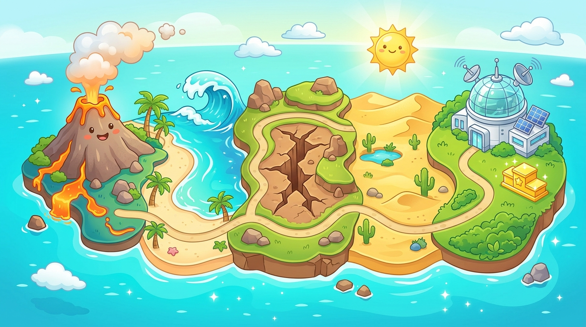

🌍
Misión: Salvar la Tierra
Mapa de Aventura
Guía de Misión
🧑🔬
Explorador
Letra:
Normal
Sonido: SÍ
Camino de las 5 Paradas
Toca la estación desbloqueada para iniciar tu reto
0% Completado
Aviso de estación
